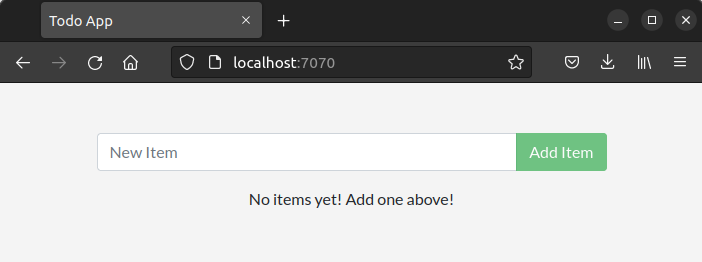

<!--meta {urls: [asix/m8/uf2], tags: [docker]}-->

<meta charset="utf-8">
<meta name="viewport" content="width=device-width, initial-scale=1">
<script src="https://cdn.jsdelivr.net/npm/clipboard@2.0.6/dist/clipboard.min.js"></script>
<script type="module" src="/sofi/js/script.js"></script>
<link rel="stylesheet" href="/sofi/css/estil.css">

<nav></nav>
<header>
    <h1>Docker</h1>
</header>

<section>

   <h2>Instal·lació</h2>

   <ul>
    <li>
        <p>docker</p>
        <host>root@host</host>
        <shell>
            curl -fsSL https://get.docker.com -o get-docker.sh && sh get-docker.sh
        </shell>

        <p>Configuració per a executar Docker com a usuari no-root:</p>
        <host>root@host</host>
        <shell>
            usermod -aG docker $USER
        </shell>

        <host>user@host</host>
        <shell>
            newgrp docker
        </shell>
    </li>
       <li>
        <p>docker-compose</p>
        <host>root@host</host>
        <shell>
            curl -L "https://github.com/docker/compose/releases/download/$(curl -s https://api.github.com/repos/docker/compose/releases/latest | grep -oP '"tag_name": "\K(.*)(?=")')/docker-compose-$(uname -s)-$(uname -m)" -o /usr/local/bin/docker-compose && chmod +x /usr/local/bin/docker-compose
        </shell>     
       </li>
   </ul>

   <h2>docker cli</h2>
   <a href="https://docs.docker.com/engine/reference/commandline/cli/">Use Docker command line</a>

   <ul>
    <li>docker run</li>
    <li>docker image
        <ul>
            <li>build</li>
            <li>ls</li>
            <li>rm / prune</li>
        </ul>
    </li>
    <li>docker container
        <ul>
            <li>ls</li>
            <li>exec</li>
            <li>logs</li>
            <li>rm / prune</li>
            <li>start / stop / restart</li>

        </ul>
    </li>
    <li>docker volume
        <ul>
            <li>create</li>
            <li>inspect</li>
            <li>ls</li>
            <li>rm / prune</li>
        </ul>
    </li>
    <li>docker ps</li>
    <li>docker compose
        <ul>
            <li>up / down</li>
            <li>logs</li>
            <li>ps</li>
            <li>start / stop / restart</li>
        </ul>
    </li>
   </ul>

   <h2>Dockerfile</h2>
   <a href="https://docs.docker.com/engine/reference/builder/">Dockerfile reference</a>
   <ul>
    <li>FROM</li>
    <li>RUN</li>
    <li>CMD</li>
    <li>ADD / COPY</li>
    <li>USER</li>
    <li>WORKDIR</li>
   </ul>

   <h2>docker-compose</h2>
   <a href="https://docs.docker.com/compose/compose-file/compose-file-v3/">compose-file-v3</a>

   <ul>
        <li>build</li>
        <li>command</li>
        <li>configs</li>
        <li>depends_on</li>
        <li>entrypoint</li>
        <li>environment</li>
        <li>image</li>
        <li>networks</li>
        <li>ports</li>
        <li>secrets</li>
        <li>volumes</li>
   </ul>
</section>

<section>
    <h2>Contenidors</h2>

    <h3>Què és un contenidor?</h3>
    <p>Simply put, a container is a sandboxed process on your machine that is isolated from all other processes on the host machine. That isolation leverages kernel namespaces and cgroups, features that have been in Linux for a long time. Docker has worked to make these capabilities approachable and easy to use. To summarize, a container:
    
    <ul>
        <li>is a runnable instance of an image. You can create, start, stop, move, or delete a container using the DockerAPI or CLI.
        <li>can be run on local machines, virtual machines or deployed to the cloud.
        <li>is portable (can be run on any OS).
        <li>is isolated from other containers and runs its own software, binaries, and configurations.
    </ul>

    <h3>Què és una imatge?</h3>
    <p>When running a container, it uses an isolated filesystem. This custom filesystem is provided by a container image. Since the image contains the container's filesystem, it must contain everything needed to run an application - all dependencies, configurations, scripts, binaries, etc. The image also contains other configuration for the container, such as environment variables, a default command to run, and other metadata.

    


    <h3>Contenidor vs Màquina Virtual</h3>
    

    <h3>Imatge vs contenidor</h3>
    

    <h3>Container images</h3>
    

    <h3>Chroot</h3>
    

</section>

<section>
    <h2>Getting started</h2>

    <p>En el següent tutorial posarem en funcionament una aplicació-web senzilla que consisteix en una TODO-APP (llista de tasques).</p>

    <info>
    <p>Pots trobar el codi de l'aplicació aquí: <a href="https://github.com/docker/getting-started">https://github.com/docker/getting-started</a></p>
    <p>La imatge docker amb l'aplicació és aquesta: <a href="https://hub.docker.com/r/gerardfp/todo-app">https://hub.docker.com/r/gerardfp/todo-app</a></p>
    <p>Aquest tutorial està extret de <a href="https://docs.docker.com/get-started/">https://docs.docker.com/get-started/</a></p>
    </info>

    <h3>Comencem!</h3>
    <p>Executa la següent comanda al terminal:</p>

    <shell>
        docker run -d -p 7070:3000 gerardfp/todo-app
    </shell>

    <p>Adona't que s'han utilitzat algunes <em>flags</em>. Aquí tens alguna info d'elles:</p>

    <ul>
        <li><w>-d</w> - Executa el contenidor en mode <em>detached</em> (en segon pla). Açò permet seguir fent altres comandes al mateix terminal, sense necessitat d'obrir-ne un altre.</li>
        <li><w>-p 7070:3000</w> - Mapeja el port 7070 del <strong>host</strong> amb el port 3000 del <strong>contenidor</strong>. Ara pots accedir a l'aplicació a través de la URL <a href="http://localhost:7070">http://localhost:7070</a>.</li>
        <li><w>gerardfp/todo-app</w> - Especifica la imatge a utilitzar. (Docker descarrega automàticament les imagtges de (DockerHub)</li>
    </ul>

    <p>I així, amb una sola comanda, ja tenim l'aplicació web en funcionament! 💪</p>
    

    <p>Ja està, executar un contenidor Docker es tan fàcil com això. Però ara bé, hem executat un contenidor a partir d'una imatge ja feta que contenia l'aplicació, però... 
        què passa si volem modificar l'aplicació? Haurem d'aprendre primer a fer imatges amb les nostres aplicacions...</p>

    <h3>Construir imatges</h3>

    <p>Per a construir la nostra imatge agafarem el codi de l'aplicació d'exemple, el modificarem un poquet, i després construirem la imatge.</p>

    <h4>Obté el codi de l'aplicació d'exemple:</h4>
    <p>Normalment per obtenir qualsevol codi font clonarem un repositori git:</p>
    <shell>git clone https://github.com/docker/getting-started</shell>

    <p>Observa que s'ha creat la carpeta <w>getting-started</w> amb tot el contingut del repositori. 
        De tot aquest contingut ens interessa la carpeta <w>app</w>, que és on es troba el codi font de l'aplicació.</p>

    <p>Obre la carpeta <w>app</w> amb l'editor que preferisques, per exemple el Visual Studio Code. Un cop obert hauries de veure aquest contingut:</p>
    

    <p>Ara farem una xicoteta modificació a l'aplicació. Podem canviar per exemple el color de fons, i podríem posar el color blau corporatiu de 
        Docker: <w><span style="color:#2496ed">█</span> #2496ed</w>. Per fer-ho has de modificar l'arxiu <w>src/static/css/styles.css</w>:</p>

    <scfile>src/static/css/styles.css</scfile>
    <sc css>
        <low>
        body {
        </low>
            <add>background-color: #2496ed;</add>
        <low>
            margin-top: 50px;
            font-family: 'Lato';
        }
        </low>
    </sc>

    


    <h4>Construir la nova imatge</h4>
    <p>Per a poder construir (<em>build</em>) una imatge, necessitem un arxiu <w>Dockerfile</w>. Un arxiu Dockerfile és simplement un script de text amb 
    les instruccions per a construir una imatge. Construirem una imatge senzilla amb la nostra aplicació:</p>

    <ol>
        <li><p>En la carpeta <w>app</w>, crea un arxiu anomenat <w>Dockerfile</w> amb el següent contingut:</p>
            <scfile>app/Dockerfile</scfile>
            <sc>
                FROM node:12-alpine
                WORKDIR /app
                COPY . .
                RUN yarn install --production
                CMD ["node", "src/index.js"]
            </sc>

            
        </li>
        <li>
            <p>Al terminal, ves a la carpeta <w>app</w>. I construeix la imatge amb la comanda <w>docker build</w>.</p>
            <shell>
                docker build -t la-meva-imatge .
            </shell>
            <p>Aquesta commanda ha utilitzat l'arxiu Dockerfile per a construir una nova imatge. Segurament t'hauràs adonat de que s'han descarregat
                un munt de "layers". Això és perquè li hem dit a docker que volem començar a partir de la imatge <w>node:12-alpine</w>. Però, degut a que 
                no la teníem al nostre ordinador, era necessari descarregar aquesta imatge (i les imatges de la qual aquesta depén...🌀).
            </p>
            <p>Un cop la imatge <w>node:12-alpine</w> s'ha descarregat, hem copiat la nostra aplicació (la carpeta <w>app</w>) i hem utilitzat <w>yarn</w> per 
                a instal·lar les dependències de l'aplicació. La directiva <w>CMD</w> especifica la comanda que s'ha d'executar quan s'inicia un contenidor 
                a partir d'aquesta imatge.</p>
            <p>Finalment, el flag <w>-t</w> posa una etiqueta (<em>tag</em>) a la nostra imatge. És com posar-li un nom. Ja que li hem posat el nom 
                <w>la-meva-imatge</w>,
            ens podem referir a aquesta imatge quan iniciem un contenidor a partir d'ella.</p>

            <p>El <w>.</w> al final de la comanda <w>docker build</w> li diu a docker que ha de buscar l'arxiu <w>Dockerfile</w> al directori actual 
                en què ens trobem.</p>
            
            
        </li>
    </ol>

    <h3>Iniciar un contenidor</h3>

    <p>Ara que ja tenim la imatge podem inicar un contenidor que la utilitzi com a base. Per fer-ho, utilitzarem la comanda <w>docker run</w> (tal com hem fet abans).</p>

    <ol>
        <li><p>Inicia el contenidor amb la comanda <w>docker run</w> tot especificant el nom de la imatge que tot just hem creat:</p>
            <shell>
                docker run -dp 9090:3000 la-meva-imatge
            </shell>
            <p>Recordes les <em>flags</em> <w>-d</w> i <w>-p</w>? Estem iniciant el contenidor en mode <em>detached</em> (segon plà) i hem mapejat el port 9090 del host
            amb el port 3000 del contenidor.</p>
        </li>
        <li>
            <p>En uns segons, obre el navegador web i ves a <a href="http://localhost:9090">http://localhost:9090</a>. Hauries de veure l'app (en color blau de fons!)</p>
            
        </li>
    </ol>

    <p>Així doncs, ja tenim en marxa el contenidor que utilitza la nostra imatge i que té mapejat el port 3000 amb el port 9090 del host. I és a través d'aquest 
        port 9090 mitjançant el qual accedim a l'aplicació web.</p>

        

    <h3>Reemplaçar un contenidor</h3>
    <p>Com hem vist, eś molt senzill crear una nova imatge (amb <w>docker build</w>) i iniciar un contenidor que la utilitzi com a base (amb <w>docker run</w>).</p>

    <p>Imagina que ara ens demanen fer meś canvis a l'aplicació. Per exemple, modificar el text que apareix com a <em>placeholder</em> en el camp de text, 
        <name>New Item</name>, i canviar-lo per <name>Item title</name>.</p>

    

    <p>Molt senzill, anem a canviar aquest text.</p>

    <ol>
        <li>
            <p>A l'arxiu <w>src/static/js/app.js</w>, modifica la línia 99 i canvia el text:</p>
            <scfile>src/static/js/app.js</scfile>
            <sc html>
                <rem>
                    placeholder="New Item"
                </rem>
                <add>
                    placeholder="Item title"
                </add>
            </sc>
        </li>
        <li>
            <p>Construïm una nova versió de la imatge, utilitzant la mateixa comanda que abans:</p>
            <shell>
                docker build -t la-meva-imatge .
            </shell>
        </li>
        <li>
            <p>Iniciem un nou contenidor que utilitze la imatge actualitzada.</p>
            <shell>
                docker run -dp 9090:3000 la-meva-imatge
            </shell>
            <p>¡Oh, noooo! 😱 Probablement vegis un error semblant a aquest:</p>

            <shell>
                docker: Error response from daemon: driver failed programming external connectivity on endpoint silly_yonath <br>(3829d660f4d8b29a93636704d71dca641fe5d498af64d50287d2439621becd8b):<br>Bind for 0.0.0.0:9090 failed: port is already allocated
            </shell>

            <p>Què ha passat? No s'ha pogut iniciar el nou contenidor degut a que el contenidor antic encara està en marxa. És degut a que el nou contenidor vol 
                utilitzar el mateix port del host, el 9090, i únicament un procés pot utilitzar un mateix port a la vegada. 
            </p>

            

            <p>Per a corregir l'error tenim dues opcions: canviar el 
                port que utilitza el nou contenidor, o esborrar el contenidor antic.</p>

            <optional>
                <p>Provem a canviar el port que utilitza el nou contenidor.</p>

                <p>Llança el nou contenidor amb un mapeig de ports diferent:</p>

                <shell>
                    docker run -dp 5678:3000 la-meva-imatge
                </shell>

                <p>Ara el contenidor s'ha d'haver iniciat correctament i hauríem de poder accedir a l'aplicació a <a href="http://localhost:5678">http://localhost:5678</a>.</p>
                <p>I naturalment, l'antic contenidor encara està en funcionament, i seguirem veient l'antiga app a <a href="http://localhost:9090">http://localhost:9090</a>.</p>
                <p>És més, segurament encara tinguis engegat el primer contenidor que hem llançat a l'inici de tot, el que tenia el fons gris (<a href="http://localhost:7070">http://localhost:7070</a>)</p>
            
                
            </optional>
        </li>
    </ol>

    <h4>Reemplaçar l'antic contenidor per el nou</h4>

    <p>Com hauràs endevinat, no és plan d'anar iniciant contenidors nous en ports diferents. Serà més convenient eliminar els contenidors antics i reutilitzar el
        mateix port.
    </p>

    <ol>
        <li>
            <p>Per a eliminar els contenidors primer cal esbrinar el seu nom. (Aquest nom és diferent al nom de la imatge <w>la-meva-imatge</w>). Degut a que 
            no hem posat cap nom al contenidor, docker n'ha generat un d'aleatori. Per a obtenir els noms dels contenidors podem usar <w>docker ps</w>:</p>

            <shell>
                docker ps
            </shell>

            <p>Ens donarà una informació semblant a aquesta, amb el nom dels contenidors a l'última columna:</p>
            <shell>
CONTAINER ID  IMAGE              COMMAND          STATUS     PORTS                   NAMES
60af742f64ee  la-meva-imatge     "docker-entry…"  Up 1 hour  0.0.0.0:5678->3000/tcp  beautiful_clint
9e196d4f2b55  la-meva-imatge     "docker-entry…"  Up 1 hour  0.0.0.0:9090->3000/tcp  relaxed_lumiere
d7e628fe0ca9  gerardfp/todo-app  "docker-entry…"  Up 1 hour  0.0.0.0:7070->3000/tcp  mystifying_boyd
            </shell>
        </li>
        <li>
            <p>Utilitza la comanda <w>docker rm -f &lt;NAME&gt;</w> per a eliminar els contenidors</p>

            <shell>
                docker rm -f beautiful_clint
                docker rm -f relaxed_lumiere
                docker rm -f mystifying_boyd
            </shell>
        </li>
        <li>
            <p>Ara ja pots iniciar un nou contenidor al port 9090 amb la nova imatge:</p>
            <shell>
                docker run -dp 9090:3000 la-meva-imatge
            </shell>
        </li>
    </ol>

    <h3>Utilitzar bind mounts</h3>
</section>